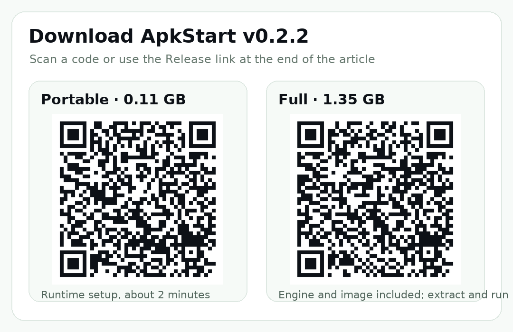

ApkStart v0.2.2 is an open-source Windows Android app launcher. The full package includes the engine and Android 14 compatibility image; extract and run with no download or setup.
Running an Android app on Windows often means downloading several gigabytes of emulator software, setting it up, finding an APK, dragging it into an emulator, and tolerating extra windows and loud fans. Installation can still fail with INSTALL_FAILED_NO_MATCHING_ABIS when an APK contains only ARM native libraries.
That is why I built ApkStart, a lightweight launcher. Associate .apk files with it and double-click to install. ApkStart reads the app name and icon, creates a desktop shortcut, and opens each app in its own window. A shared folder lets you move files between Windows and Android.
1. Double-click to install. Associate .apk files with ApkStart. It reads the app name and icon and creates a desktop shortcut without opening an emulator console.
2. Separate app windows. Each app runs in its own resizable window (am start --windowingMode 5) and can be arranged like a native Windows application.
3. Shared files. %USERPROFILE%\ApkStartShared is connected to Android's shared directory, so files copied or dragged there can be opened by Android apps.
4. Official engine and hardware acceleration. ApkStart uses the official Google Android Emulator and AEHD driver. Runtime components are downloaded in parallel, verified, and managed by the app.
The full package works out of the box. It includes the runtime engine, platform-tools, AEHD driver, and an Android 14 compatibility image with an ARM translation layer. Extract and run ApkStart.exe—no download or setup required.
ARM-only apps work better. Apps such as Hongguo Short Drama crashed on the old API 30 image after the privacy dialog. In the reported test, the updated translation layer on Android 14 passed installation, opened the recommendation feed, and played and switched videos without crashing.

Enable ARM compatibility mode in Settings. Apps with stronger anti-emulator checks, such as checks for real sensors or baseband, may still be limited.

The WeChat article cannot attach installers, so scan a QR code below to download directly or use the Release link at the end of the article.

| Package | Size | Best for |
|---|---|---|
Portable win64-portable.zip | 0.11 GB | Set up the engine and image on first launch; about two minutes. |
Full win64-full.7z.001 (recommended) | 1.35 GB | All components and ARM compatibility image included; extract and run. |
The full package is a 7z archive. Extract the .001 file with 7-Zip, WinRAR, or Bandizip; this release has one volume. Both packages are portable and do not require administrator installation.
The project is open source: github.com/RoutineMiku/apkstart. Stars, issues, and pull requests are welcome.
ApkStart is developed and maintained by RoutineMiku. Powered by RoutineMiku.
WeChat and Douyin QR codes are included below and in Settings → About.


Douyin: RoutineMiku — https://v.douyin.com/9TIIxVCANig/
ApkStart is licensed under MIT. The portable package downloads runtime components from official Google sources on the user's machine. The full package bundles those components for convenience; each component remains subject to its own license.